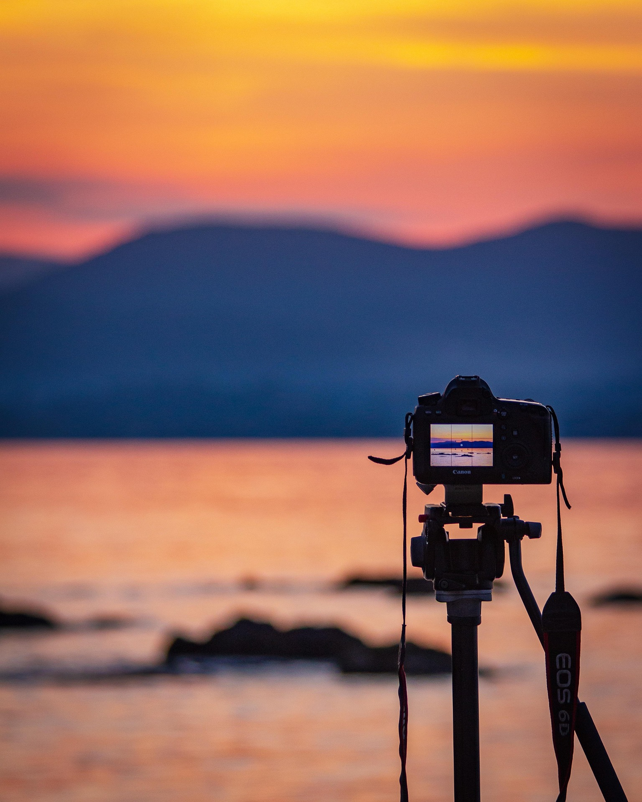

À l’heure des transitions écologiques, les mots ne suffisent plus : il faut donner à voir. Nous sommes un studio de production audiovisuelle spécialisé dans la nature et l'environnement. Nous mettons la puissance du récit visuel au service des entreprises, collectivités et acteurs du territoire pour traduire leurs actions écologiques visuellement.
Comment nous vous accompagnons ?
Pour les Entreprises & Marques
Dépassez le discours institutionnel classique. Nous documentons vos démarches de décarbonation, d'éco-conception ou de préservation sur le terrain avec authenticité (exit le greenwashing).
Pour les Collectivités & Territoires
Mise en valeur du patrimoine naturel, promotion de parcs naturels, réserves, biodiversité locale et écotourisme.
Pédagogie & Concertation publique
Films explicatifs pour sensibiliser les citoyens à des aménagements durables, des plans de sobriété ou la préservation de la faune et de la flore locales.
Documentaires d'impact & Reportages
Suivi de projets de restauration d'écosystèmes, de reforestation et d'initiatives scientifiques.
